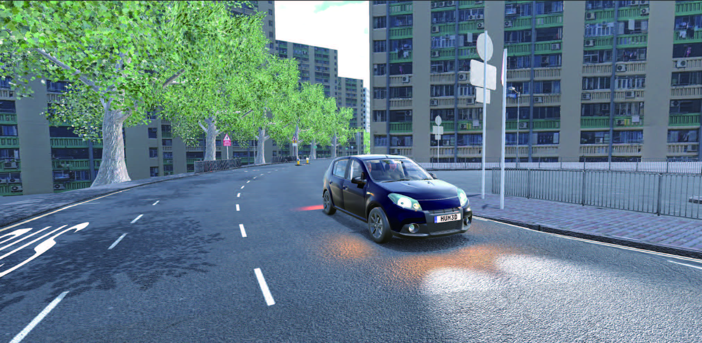
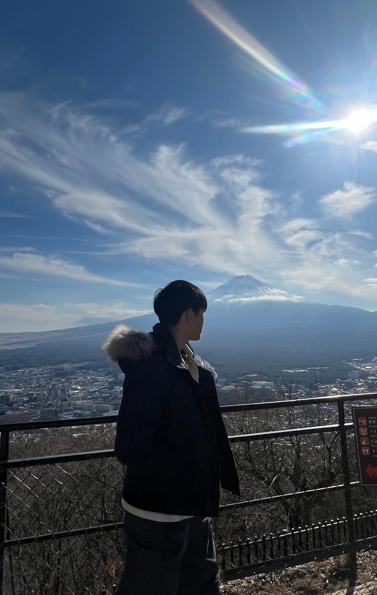
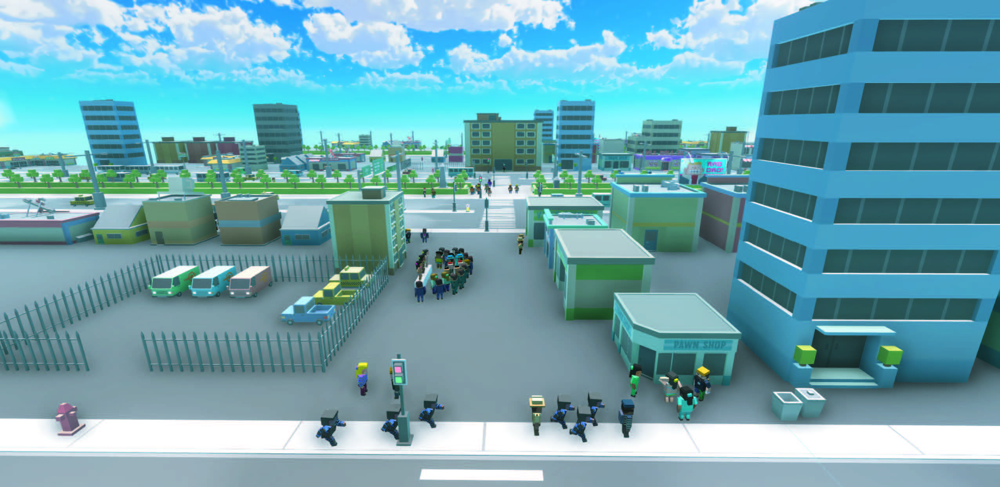
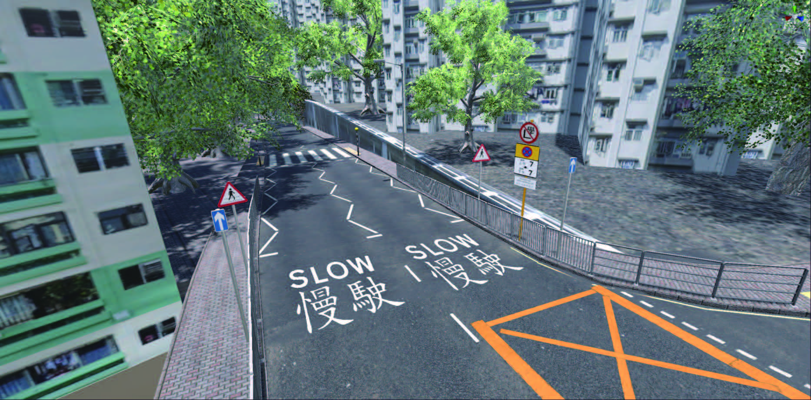
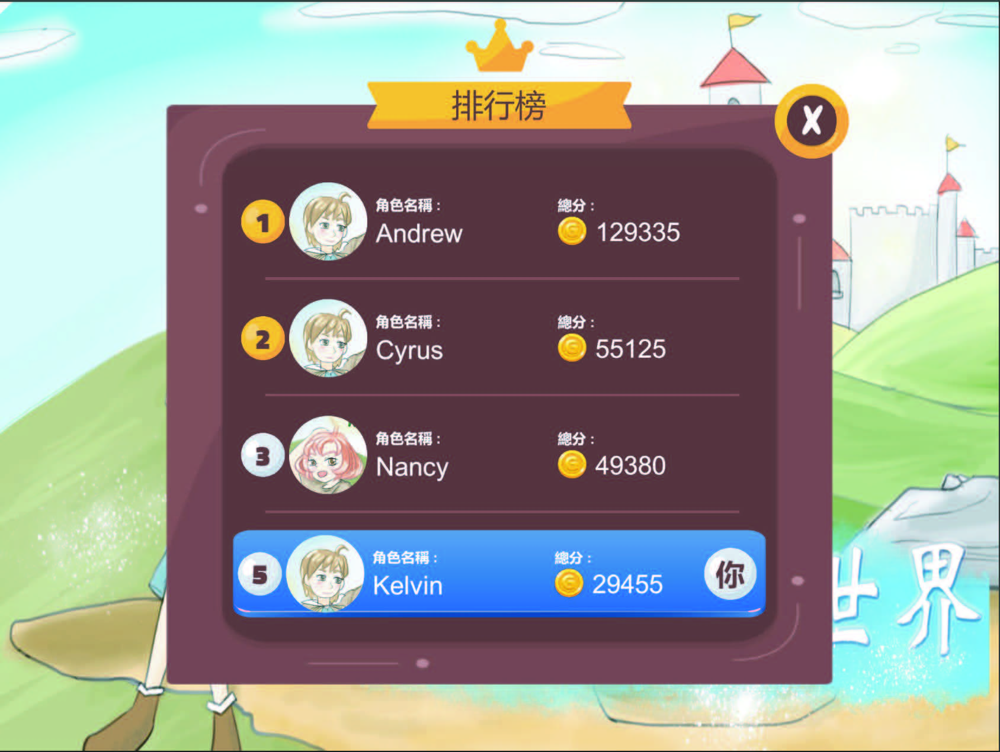
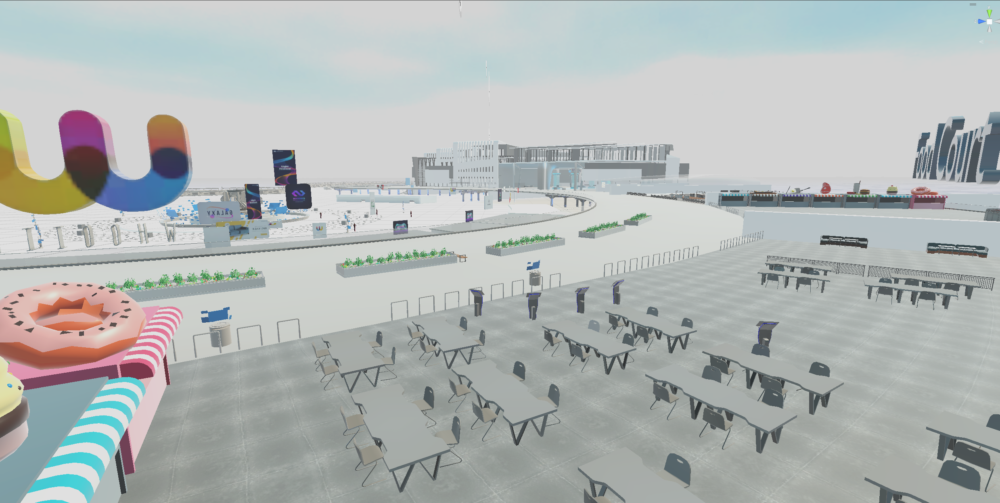

I am a VR and game developer focusing on traffic safety, driving education, and spatial skills training. My work combines gameplay, education, and research to build immersive experiences on VR and mobile platforms.
Expertise across VR development, gameplay programming, UI/UX, scene design, and database integration, with experience leading multi‑year research and simulator projects.


2019 Mar - 2019 Apr · Simple Traffic Simulator
A mobile VR application that teaches children how to cross roads safely using game elements; players must cross roads to complete missions, encouraging safe and responsible decision‑making.
2022 Apr - 2022 June · VR Driving School
This project simulates a driving school for learners in Hong Kong. It features a map based on the Ho Man Tin exam route and includes a rule system for exams, along with simple pedestrian and traffic systems to recreate real‑world driving scenarios.
The application utilizes eye‑tracking technology to provide an immersive and realistic learning experience for new drivers.


2022 Nov - 2023 Nov · Spatial Project
A research project consisting of five mini‑games aimed at testing and enhancing spatial skills. The system includes a database to track players' reaction times and accuracy across different spatial tasks.
As the lead developer, I handled programming, UI design, game design, storytelling, scene design, and database integration across all mini‑games.
2023 Apr - 2024 Apr · Smart Traffic Fund – VR Driving School Simulator
An advanced version of the VR Driving School project, funded by the Smart Traffic Fund. This enhanced simulator introduces a hand‑tracking system that allows users to interact with interior features such as the hand brake, gear shifter, hazard lights, turn signals, and the engine start button.
The project utilizes a Gaussian splat pipeline to simulate the streets of Hong Kong, creating a highly realistic urban driving environment.

2023 May - 2023 July · 3D TPS Mobile Game
A 3D third‑person shooter mobile game that lets players experience hide‑and‑seek gameplay in various scenes. The project combines action mechanics with playful level and scene design.
My contributions included UI design, scene optimization, game coding, post‑processing, story creation, game system development for the hide‑and‑seek mechanics, and cinematics for NPC cut scenes.